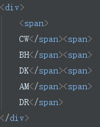
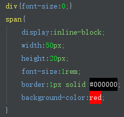

去除inline-block间距有哪几种方法？
【深圳173期】小课堂-csstask06
分享人：黄源志
目录
1.背景介绍
2.知识剖析
3.常见问题
4.解决方案
5.编码实战
6.扩展思考
7.更多讨论
8.参考文献
1.背景介绍
display:inline; 内联元素，简单来说就是在同一行显示。 display:block; 块级元素，简单来说就是就是有换行，会换到第二行。 display:inline-block; 即内联块状元素，可以水平排版。
2.知识剖析
inline-block 内联块状元素，可以水平排版。但我们发现inline-block元素间在换行显示或空格分隔的情况下会出现空白间隙。 这种表现是符合规范的应该有的表现，而不是bug。但是有时候会对我们的布局造成影响，所以有时候我们需要想办法去除它
demo1
3.常见问题
常见去除inline-block间距的方法有哪些？
4.解决方案
方法一:改变书写方式
方法二：font-size
方法三：使用margin负值
方法四：使用word-spacing或letter-spacing
方法一:改变书写方式
元素间留白间距出现的原因就是标签段之间的空格，因此，去掉HTML中的空格，自然间距就消失了。
aabbccdd
demo2
我们可以把inline-block元素写在同一行，这种方案是最直接的解决方案，但却也是最不靠谱的方案，存在很多不可控因素。 很多场景会让你崩溃：前后端协同；版本更迭；他人接手；自己忘了...，太多一不小心都可能让这个方案失效。
考虑到代码可读性，显然连成一行的写法是不可取的，我们可以进行改进，如下面几种写法：


对于某些元素可以将中间的结束标签去掉

demo3
方法二：font-size
这个方法，基本上可以解决大部分浏览器下inline-block元素之间的间距(IE7等浏览器有时候会有1像素的间距)。
demo4
方法三：使用margin负值
margin负值的大小与上下文的字体和文字大小相关，Arial字体的margin负值为-3像素，Tahoma和Verdana就是-4像素，而Geneva为-6像素。由于外部环境的不确定性，以及最后一个元素多出的父margin值等问题，这个方法不适合大规模使用。

demo5
方法四：使用word-spacing或letter-spacing
一个是字符间距(letter-spacing)一个是单词间距(word-spacing)，大同小异。 父元素letter-spacing负值只要大到一定程度，其兼容性上的差异就可以被忽略。因为，即使父元素letter-spacing负值很大，也不会发生重叠。但是子元素要设置letter-spacing为0，不然会继承父元素的值；使用word-spacing时，只需设置父元素word-spacing为合适值即可。

demo6
使用letter-spacing和word-spacing时， 其在不同浏览器下效果不同，在Opera浏览器下最小间距1像素，然后，letter-spacing再小就还原了。
5.编码实战
6.扩展思考
上面使用到的几种方法都存在一定的缺陷，怎样兼容尽可能多的浏览器？
在不同情况下选用不同的方法，font-size基本上可以解决大部分浏览器下inline-block元素之间的间距。或者可以同时写多种方法，这样就可以兼容不同浏览器

7.更多讨论
四种方法哪种更为实用呢？
还有哪些方法可以去除inline-block间距？
INLINE-BLOCK空隙产生的原因？
通过前面的列子我们可以看到当没有换行或者回车时，空隙就不存在了，所以说间隙是由换行或者回车导致的。 其实space是由换行或回车所产生空白符所致，解决办法：就是去掉空白符。为什么font-size会对间隙有影响。 space是由换行或回车所产生空白符所致，既然是字符当然无法摆脱font的控制。
8.参考文献
参考一：张鑫旭-鑫空间-鑫生活
鸣谢
感谢大家观看
胡嘉杰|黄源志